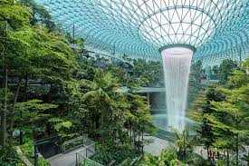

Why Engineering and Arts & Humanities Need Each Other for Truly Healthy Buildings

As engineers and scientists working on healthy buildings, we rely on computational fluid dynamics, statistical models, and experimental measurements. But something vital is missing from our approach. Despite our technical sophistication, we continue to struggle with the most fundamental question: how do we create spaces that truly enhance human wellbeing? The answer may lie outside our traditional disciplinary boundaries.
"We shape our buildings; thereafter they shape us."
Engineering approaches to healthy buildings have yielded remarkable innovations—advanced ventilation systems, surface materials that resist pathogen adhesion, smart sensors that monitor air quality in real-time. We can model airflow patterns with stunning precision and track particle dispersion through complex spaces. Yet buildings designed with impeccable technical credentials still often fail to resonate with their occupants.
Why? Because buildings aren't merely technical systems—they're cultural artifacts, psychological spaces, and social environments. They embody narratives about who we are and shape how we relate to each other and our surroundings. These dimensions remain largely invisible to conventional engineering methods.
Consider hospital design. We can meticulously calculate air changes per hour and optimise layouts to minimise cross-contamination risks. But what about the patient experience of these spaces? How do aesthetic elements influence recovery rates? How might spatial configurations affect staff stress levels and communication patterns? Our computational models can't fully address these questions.
Meanwhile, across campus, scholars in arts and humanities possess analytical frameworks and insights directly relevant to these challenges:
These disciplines have developed sophisticated methods for interpreting cultural meanings, analysing human experiences, and understanding social dynamics—precisely the dimensions our engineering approaches struggle to address.
During a recent project evaluating ventilation systems in a 19th-century hospital building being repurposed for contemporary healthcare, our engineering assessments identified multiple deficiencies requiring substantial retrofitting. The proposed modifications would have destroyed many heritage features.
When we consulted with architectural historians, they revealed how the original designers had incorporated sophisticated passive ventilation principles specific to that era. By understanding the historical design intent through archival research, we were able to restore and enhance these systems rather than replace them—achieving comparable performance with less disruption and at lower cost while preserving cultural heritage.
If these complementary perspectives offer such value, why don't we see more collaboration between engineering and arts & humanities in building research? Several barriers stand in our way:
Engineering prioritises quantitative data, replicable experiments, and generalizable principles. Arts and humanities often employ interpretive methods that embrace subjectivity, context-specificity, and ambiguity. These approaches aren't inherently incompatible, but they require mutual respect and translation work to integrate effectively.
The specialised terminologies of our fields create communication challenges. What an engineer means by "resilience" or "efficiency" may differ substantially from how these terms function in cultural theory. Building shared vocabularies takes time and patience.
Universities organise research and teaching by discipline. Funding mechanisms, performance metrics, and publication venues reinforce these boundaries. Cross-disciplinary work often struggles to find institutional homes or recognition pathways.
Engineers may view arts and humanities as interesting but ultimately impractical; humanities scholars may see engineering as technically impressive but insufficiently critical or reflective. These stereotypes persist partly because we rarely engage seriously with each other's methods and contributions.
Despite these challenges, pioneering work at the interface between engineering and arts & humanities demonstrates the potential of genuine collaboration. Based on these examples and our own experience at the Healthy Buildings Network, we propose several strategies:
Rather than attempting to reconcile entire disciplinary paradigms, focus on specific research questions that clearly require multiple perspectives. For example: "How do hospital soundscapes affect patient recovery?" This naturally invites collaboration between acoustic engineers, musicologists, and medical humanities scholars.
A collaborative project between our engineering team and Leeds' School of Music is examining how surgical recovery environments could be optimised through acoustic design. Engineers are measuring sound transmission and reverberation characteristics, while musicologists contribute expertise on harmonics, rhythm perception, and cultural associations of different sound patterns. Together, we're developing evidence-based design guidelines that consider both physical acoustics and subjective experience.
Cross-disciplinary understanding develops through sustained interaction. Establish regular forums where engineers and humanities scholars can share their approaches to common challenges. Workshop formats where participants experience different methodologies firsthand are particularly effective.
Rather than simply juxtaposing different approaches, work toward integrated methods that combine technical and humanistic elements. Example: pair computational models of indoor air movement with ethnographic studies of how occupants perceive and interact with ventilation systems.
Buildings exist within cultural narratives about health, technology, and sustainability. Humanities scholars can help engineers understand how their work relates to these broader stories—and how technical innovations might reshape cultural narratives in return.
At the Healthy Buildings Network Leeds, we're committed to fostering these collaborations. We're launching several initiatives:
We invite researchers from all disciplines to join us in this work. The challenges of creating truly healthy buildings—spaces that support physical health, psychological wellbeing, social connection, and cultural meaning—are too complex for any single approach. By bridging the divide between engineering and arts & humanities, we can develop more holistic, effective, and humane solutions.
After all, buildings are simultaneously physical structures and cultural artifacts, technical systems and lived experiences, scientific problems and human stories. Shouldn't our approaches to understanding and designing them be equally multifaceted?
Are you a researcher in arts, humanities, or cultural studies interested in the built environment? Or an engineer curious about how cultural and experiential perspectives might enhance your work? We want to hear from you.
Join us on July 15 for our first cross-disciplinary workshop: "Building Stories: Narratives and Numbers in Healthy Environment Research." Register through our events page.
Contact us at healthy_buildings_network@leeds.ac.uk to discuss potential collaborations or to join our interdisciplinary mailing list.

Director, Water, Public Health & Environmental Engineering Research Group, University of Leeds
Dr. King leads interdisciplinary research at the intersection of fluid dynamics, infection control, and public health. He is increasingly interested in how engineering approaches can be enriched through collaboration with arts and humanities disciplines.
On computational modeling and interdisciplinary approaches to healthy buildings

How collaborative approaches are transforming building design methodologies

Exploring how different cultures interpret and implement nature-inspired design